Plenty of Free Parking for Ladas at the Bazaar
Language Learning Apps as Microservices
Inflicted upon you by Adam Leskis / @BaronVonLeskis
I know what you're thinking...
...So how can we engineer language learning/teaching?
Google (and others) already working on the stuff with business implications
Learning for language students (with the exception of high stakes testing) is a vastly underserved need
Some current approaches exist
...so let's take a look at them
Duolingo claims:
Their stuff is basically as good (or better) than taking a university course
hold on, what's that fine print...???
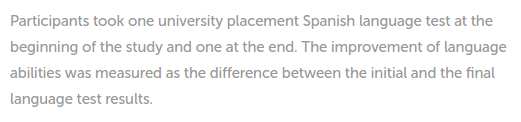OH thank GOODNESS!!! Their claims are based on research!

But what of this "research"...???
...let's check out the "greatest hits" of this "independent study"
This is a sample of the questions on the test
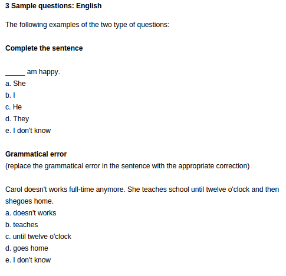Actually, let's take a time out...
for a quick primer on assessment
For our purposes, the two main concepts are Content Validity and Construct validity
Content Validity
=
Does this test what we learned or what we need to learn?
Examples of poor Content Validity
“The teacher covered chapter 3 in class, but the exam was all from chapter 5...”
“We just had a Spanish test, and the reading had a bunch of vocabulary that we didn't learn...”
“In my degree programme, we studied java applets, but now I'm in the industry, and nobody uses those...”
Construct validity
=
Does this test what we claim it's testing?
=
Does this test what we claim it's testing?
Examples of poor Construct Validity
“This is a speaking class, but all we do is copy sentences off the board...”
“The course was supposed to teach us programming, but the test was just questions about the mathematical theorems underlying different algorithms...”
“The international students are super good at giving memorised speeches, why do they have so much trouble making conversation...???”
...so now let's return to Duolingo
and some tasty screenshots
...not so fast, duolingo!!!
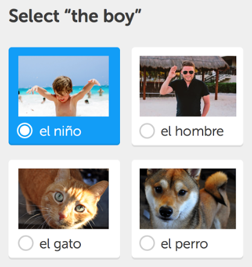hmmm, maybe I DON'T actually know how to say that in English...
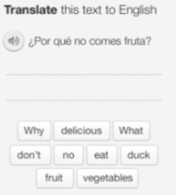I took the placement test for Spanish
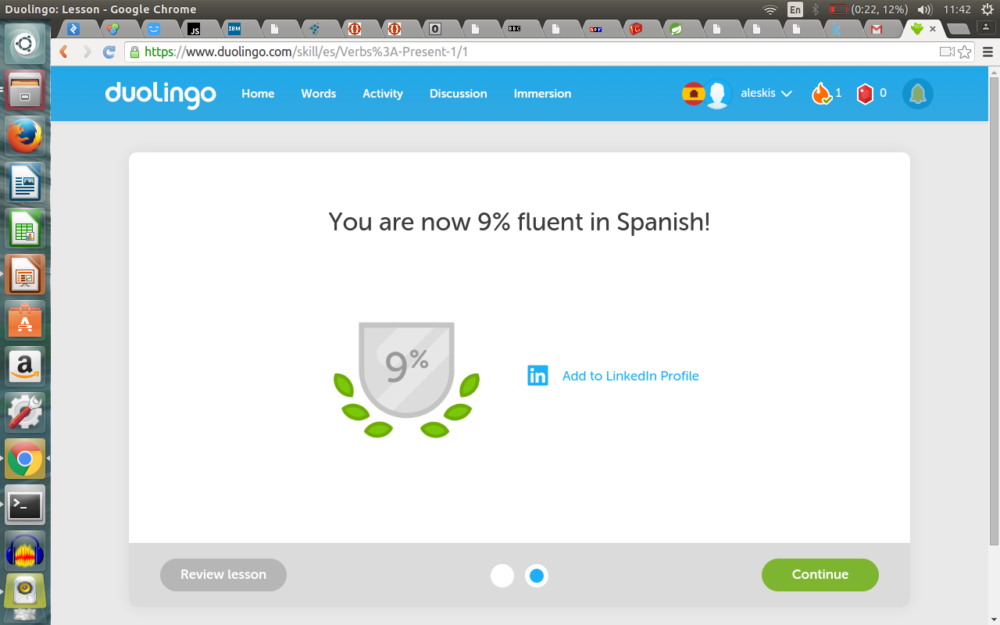The trials I faced would have slain lesser mortals
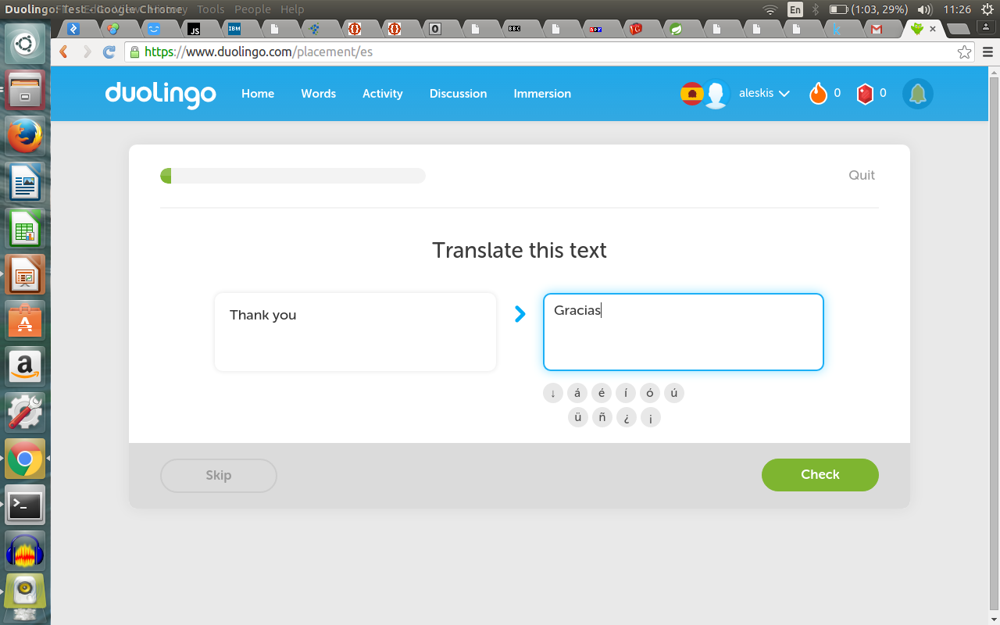Not all the questions were cake walks, however...
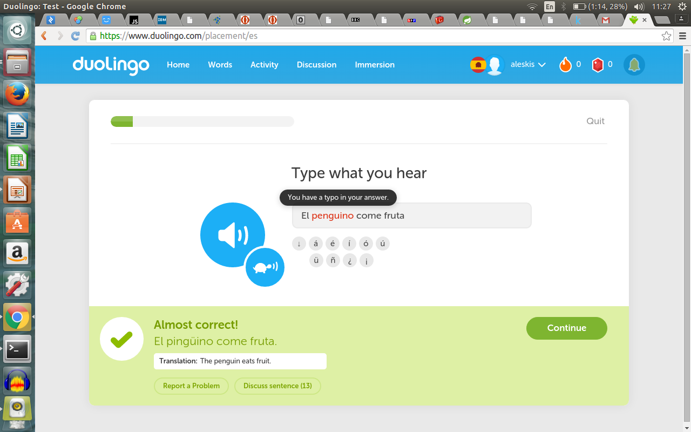so naturally, the next thing I decided to do was to see how Duolingo would rate me as an English speaker
hmmm, looks pretty legit...
...wait, OPTIONS?!?!?
guess I'll choose the free one
pretty sure I got em all...
NOPE
This was easy because I say this all the time
...this too
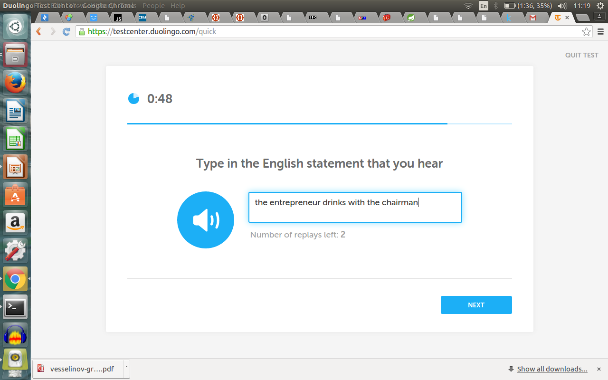...selecting words, just like in real life!
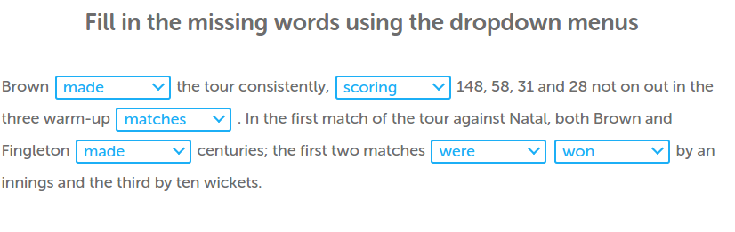this type of activity was literally a third of the test
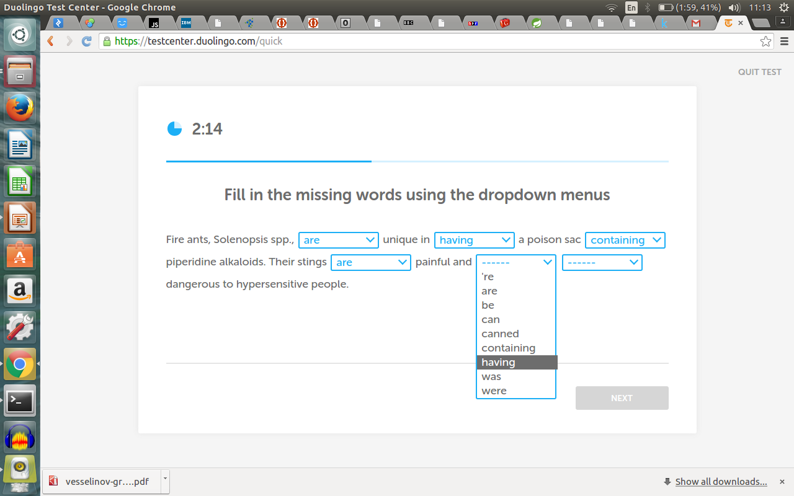well Duolingo has some issues...what about Memrise?

what is being learned/tested here?
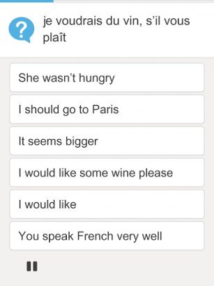It's not all bad, though
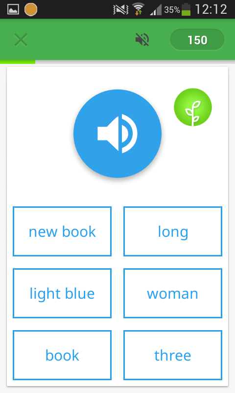And even Duolingo has some redeeming qualities
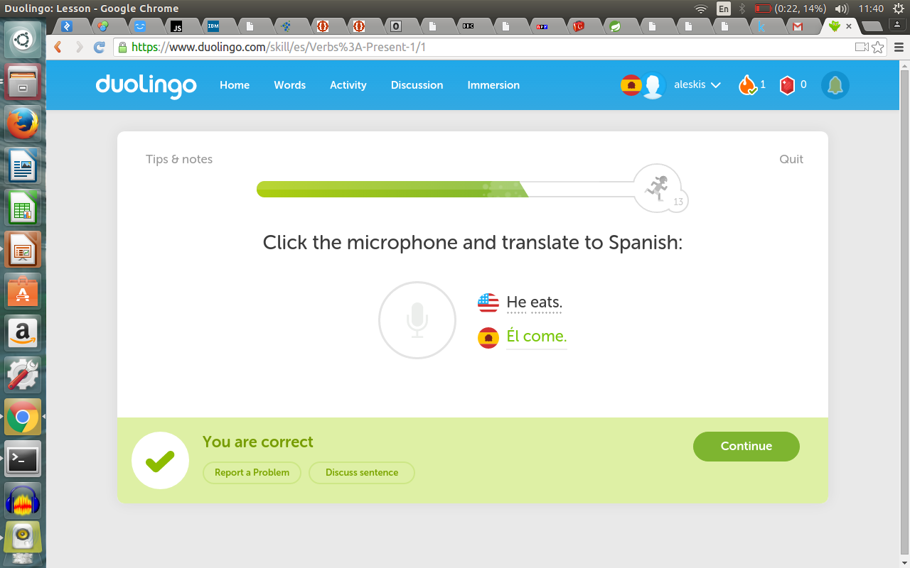So to review:
- Both apps are essentially electronic flashcard sets
- They focus on language knowledge instead of language use
- Their claims of "teaching" "a language" are a bit misleading
- They have very limited/basic language use activities, but these could be done better
Duolingo and Memrise are essentially outcomes of a cathedral approach to language learning apps
- and for the metaphorical purposes of this presentation, they are also like ferraris (expensive smart things)
- what we need is Ladas (cheap dumb things)
- too mixed of a metaphor...?
current language learning apps are cathedrals/ferraris
- Memrise/Duolingo try to do everything (make lots of claims)
- From a psychometrics/assessment perspective, they do very little
- Overengineered for what they actually are
- Mostly knowledge/comprehension-based learning outcomes
- Electronic versions of flash-cards and classrooms (nothing “new” here)
What we need is more bazaars/ladas
- More pieces that are smaller/more modular
- Many people working on their own small piece
- Achieving complex things by accomplishing many simple things
- Many tasks in language learning can be decomposed into much smaller sub-tasks (What do students at University need to do in order to "write a research essay in English?")
- ...let's take a look!
- choose relevant sources
- take notes on relevant sections of relevant sources
- choose which relevant sections from sources to combine as evidence
- paraphrase combination of relevant source sections for inclusion in draft
- synthesise the common element of each relevant selection
- vocabulary considerations
- take notes on citation information
...and we haven't even started writing yet
some (admittedly rough) attempts at what I'm proposing
now, let's see if the live demo is finished!!
So what else could we do?
how about auto-generating materials?
- using fiction writing from Reddit/r/writingprompts to generate authentic fiction activities for writing students
- although full text research articles are difficult to get, abstracts are much easier
(Mendeley, Arxiv, Biomedcentral) - News article APIs are fairly common
(The Guardian, NY Times) - ...Requiring a teacher to create materials takes time and usually money (we shouldn't be relying on it)
For academic reading activities
- Highlight tenses by section in research articles
- Highlight tone/stance via sentiment analysis
- Highlight features (vocabulary/transitions/reporting verbs) used too frequently in a given proximity.
QUESTION: How technically difficult do these look?
For practising revision of writing
- Strip articles (a/an/the)
- Change verb forms (would involve --> would involves)
- Highlight nodes (eg, Noun Phrases) to elaborate
QUESTION: and how hard do these look?
yeah, but that's boring!
For speaking practice
- Accelerometer evaluating predicted voiced/unvoiced consonants (sensitive to 0.1mm)
- Replay user audio at artificially stretched pitch contours
- Measuring and evaluating expected volume peaks (eg, the BIRDS will have EATen the WORMS)
- Speak Speak revolution
and here's where it gets way out there...
- Use the device to give visual feedback based on a mouthpiece (tongue position)
- Use the device to give visual feedback based on a neckpiece (laryngeal motion)
- Anyone wanna hack on this at one of the hardware hacks this summer?
Things we are NOT trying to do
- Speech recognition
- Semantic (meaning) analysis
- Interact communicatively with users
To reiterate, we don't need super sophisticated apps
...because the job of teachers, in large part, is not super sophisticated
we mostly just point at things


Possible issues
- Nobody is currently interested in paying to develop this (obvious and understandable)
- Cross-disciplinary understanding of both coding and language assessment is not very well developed
- I know how to do this (kind of), but it's going to take me a long time by myself
Cool, so what's the endgame?
basically we change the whole paradigm
- Move language learning into the hands of users
- Autogenerate materials: reduce the reliance on a teacher
- Can provide instantaneous feedback
Will any of it actually work?
...I dunno. But I'm gonna find out
THE END
- REMINDER: No code in presentation = No questions about code
- Anything else is fair game!